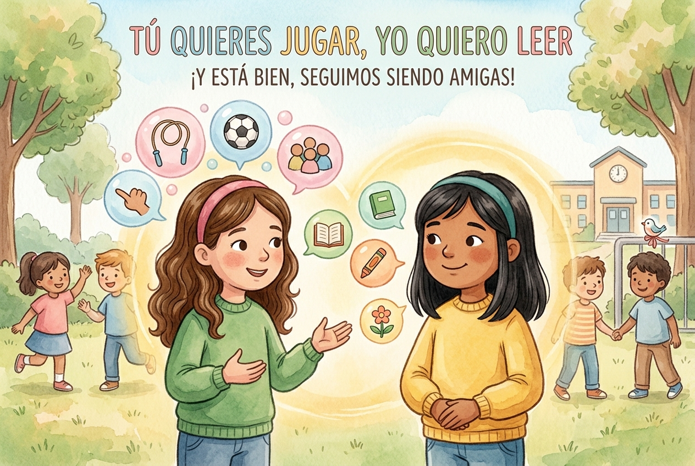
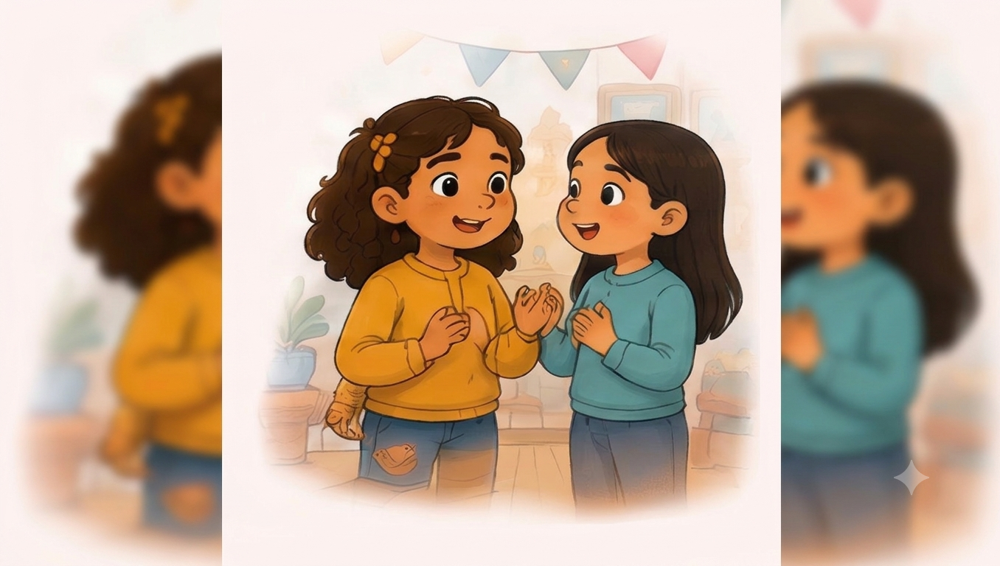
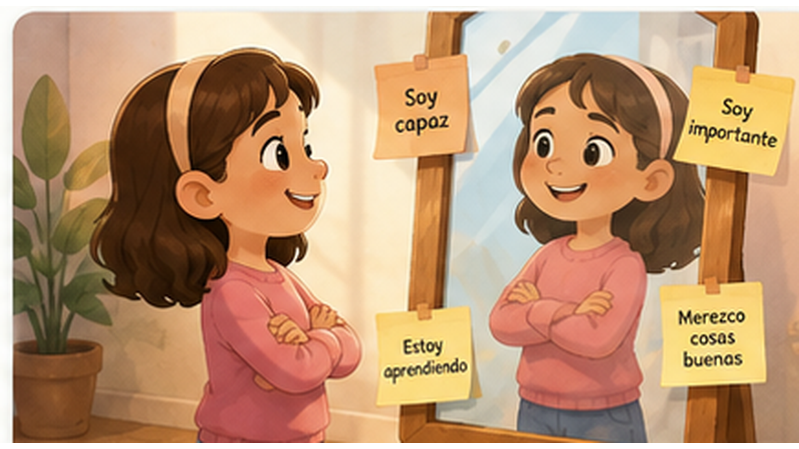
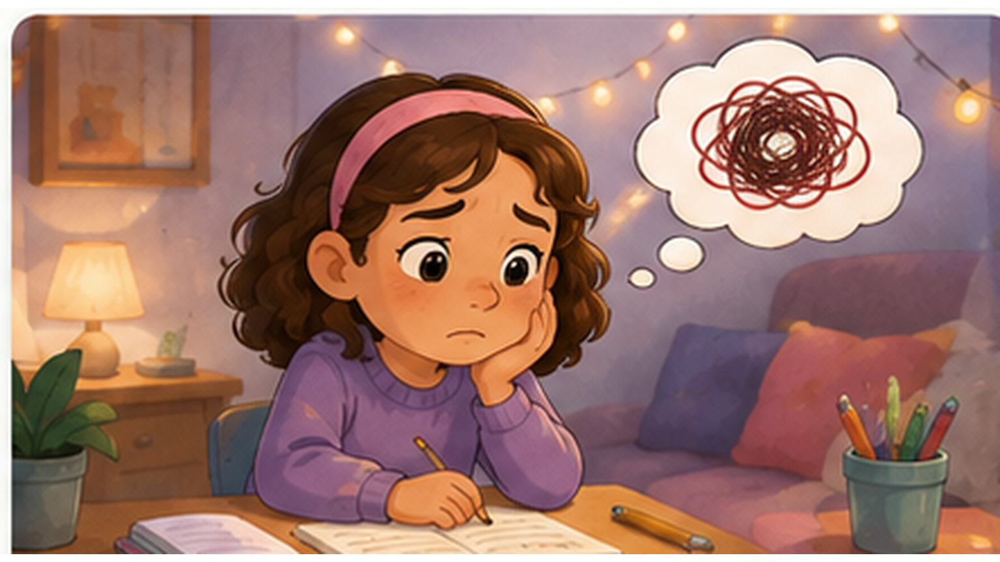
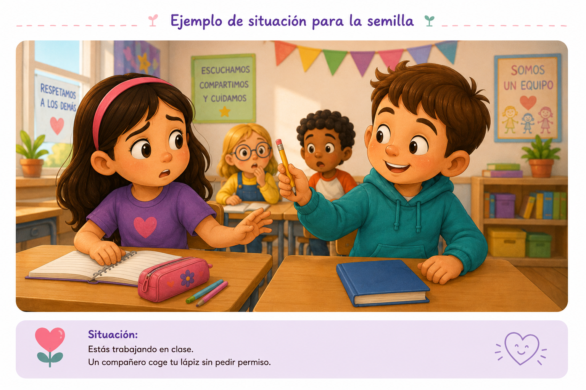

1. Qué son
Pequeñas experiencias guiadas que parten de una situación real y ayudan a observar, poner palabras, considerar alternativas y practicar una respuesta posible.
Una guía para comprender qué trabaja cada Semilla, cómo se practica y qué puede resultar útil observar al acompañar al alumno.

Pequeñas experiencias guiadas que parten de una situación real y ayudan a observar, poner palabras, considerar alternativas y practicar una respuesta posible.
Tienen más valor cuando conectan con una experiencia real o una habilidad que se desea practicar. No hace falta completar muchas seguidas.
Conviene permitir tiempo, opciones y palabras propias. Suele ser más útil observar cómo razona y qué lenguaje utiliza que buscar una respuesta “correcta”.
Pueden ayudar a conocer qué se practica, qué lenguaje conviene reforzar y qué situaciones reales podrían merecer trabajo adicional.
Comprender antes de juzgar, poner palabras a lo que ocurre, reconocer que no siempre sabemos lo que otros piensan, cuidar la propia voz y elegir pequeños pasos posibles.
Las Semillas no son pruebas psicológicas, diagnósticos ni instrumentos clínicos. Las observaciones de esta guía son pistas para conversar y comprender mejor cómo vive el alumno cada situación.
A continuación se describen las 11 Semillas actuales de Creciendo por Dentro. En cada una encontrarás la situación que aborda, su objetivo principal, cómo se practica, qué conviene observar y el mensaje clave que intenta dejar.
Estar ante una actividad que cuesta, recibir una oferta de ayuda de una persona adulta o compañera y sentir el impulso de rechazarla aunque todavía no se sepa cómo continuar.
Ayudar a comprender que aceptar apoyo no elimina la autonomía ni el mérito propio. Una pista, una explicación o un ejemplo pueden facilitar el aprendizaje sin sustituir el pensamiento, el esfuerzo ni los siguientes pasos del alumno.
Clave de acompañamiento: la experiencia diferencia entre “hacerlo por mí” y “ayudarme a aprender cómo hacerlo”.
Puedo aceptar apoyo y seguir siendo capaz.
Después de un tiempo de actividad, conversación o juego, notar cansancio, saturación o dificultad para concentrarse y necesitar unos minutos de tranquilidad antes de continuar.
Normalizar que un breve momento de calma o de estar consigo mismo puede ser una forma saludable de descansar la mente, sin convertirlo en rechazo de los demás ni en evitación permanente.
Clave de acompañamiento: la pausa se presenta como un recurso para regularse y regresar, no como una forma de desaparecer de las situaciones que cuestan.
Puedo darme un momento de calma y después volver.
Pasar cerca de niños que no conoce, sentir que “la miran feo” y reaccionar mirando al suelo, acelerando el paso o intentando evitarlos.
Ayudar a diferenciar lo que realmente se observa de lo que todavía no se sabe sobre las intenciones de otras personas, reconociendo al mismo tiempo que la incomodidad o el nerviosismo sí son reales.
Clave de acompañamiento: no obliga a mirar a los ojos. Puede bastar con levantar la mirada hacia donde se camina, respirar, mantener un ritmo normal o continuar con la actividad.
No tengo que adivinar lo que piensan. Puedo seguir con calma.
Descubrir que unas amigas tienen un plan o actividad y que ella no está invitada, incluso cuando ella misma ya tenía otro plan.
Ayudar a manejar tristeza, decepción, confusión, enfado o celos sin convertir rápidamente una situación concreta en una conclusión general sobre la amistad o sobre su propio valor.
Puede seguir disfrutando un plan propio, buscar otra actividad o compañía, preguntar con calma más adelante o hablar con un adulto de confianza si la situación se repite o resulta especialmente dolorosa.
Que un plan no me incluya no cambia mi valor.

Semilla 007 Puedo elegir diferente Autoestima · 9 minEstar con amigas que quieren hacer una actividad y sentir la tentación de elegir lo mismo aunque realmente prefiera otra cosa.
Fortalecer la capacidad de escuchar la propia preferencia, expresarla con amabilidad y comprender que pensar o elegir diferente no significa perder una amistad. También refuerza que pensar, elegir o probar algo por cuenta propia puede ayudar a aprender, comprender mejor una actividad y conocerse más.
Puedo pensar diferente, probar mi manera y seguir siendo una buena amiga.
Mirar un logro o experiencia reciente no solo para celebrarlo, sino para descubrir qué enseña sobre sus propios recursos y capacidades.
Transformar una experiencia positiva en autoconocimiento: reconocer qué aprendió de sí misma, qué le sorprendió y qué habilidad desea seguir practicando.
Puedo aprender de lo que vivo y seguir creciendo.
Detenerse a mirar un logro reciente que podría pasar desapercibido porque no parece “enorme”.
Ayudar a reconocer avances reales y relacionarlos con las estrategias que permitieron conseguirlos, reforzando una visión más concreta y amable de la propia capacidad.
La Semilla normaliza logros pequeños: terminar algo difícil, atreverse, pedir ayuda, probar otra estrategia o continuar después de calmarse.
Puedo reconocer mis avances y aprender de ellos.

Semilla 004 Nos escuchamos y buscamos un acuerdo Relaciones · 8 minDos amigas quieren usar el mismo juego primero, ambas insisten y empiezan a molestarse.
Practicar resolución de pequeños conflictos mediante descripción sin culpa, toma de perspectiva, expresión clara y búsqueda de acuerdos.
Puedo expresarme, escuchar y buscar acuerdos.

Semilla 003 Yo sí puedo Autoestima · 7 minTerminar un trabajo propio —por ejemplo, un dibujo—, compararlo con el de otra persona y empezar a sentir que el propio vale menos.
Reducir el peso de la comparación y dirigir la atención hacia el propio proceso, las fortalezas utilizadas y los pequeños avances.
Mi esfuerzo y mis avances tienen valor.

Semilla 002 Nombro lo que siento Emociones · 7 minIntentar varias veces una actividad y que no salga como esperaba.
Desarrollar vocabulario y conciencia emocional mediante una secuencia sencilla: notar → nombrar → comprender qué puede necesitar → elegir una forma de cuidarse.
Primero se observan posibles señales corporales o impulsos. Después se consideran emociones como frustración, tristeza, enfado o preocupación. Finalmente se explora qué puede necesitar y qué acción pequeña puede ayudar.
Puedo escuchar lo que siento.

Semilla 001 Aprendo a decir lo que siento Comunicación · 8 minUn compañero coge su lápiz sin pedir permiso mientras trabaja en clase.
Practicar una comunicación clara y respetuosa cuando algo molesta, separando lo ocurrido de los juicios sobre la otra persona.
Mi voz merece ser escuchada.